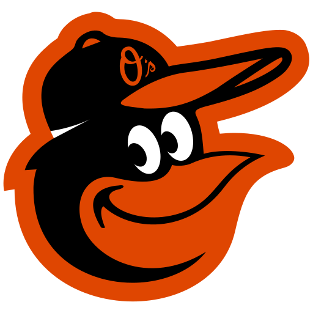
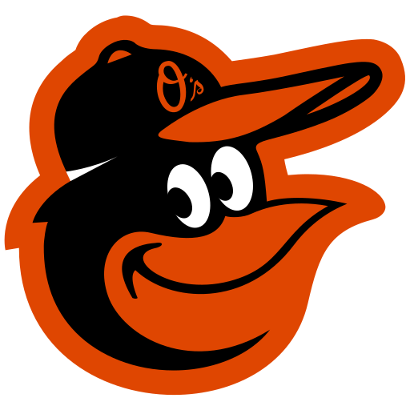

Sports
Last updated {{game.lastUpdate | date: 'MMM d' }} at {{game.lastUpdate | date: 'h:mma'}} ET
 

{{game.awayTeamWins}} - {{game.awayTeamLosses}}
{{game.initialGameInfo[0].currentPlay.result.awayScore}}
{{game.currentHalfInning}}
{{game.startTime | date: 'E M/d' }}
Final
{{game.startTime | date: 'E M/d' }}
{{game.startTime | date: 'h:mm a'}} ET
{{game.initialGameInfo[0].currentPlay.count.balls}} - {{game.initialGameInfo[0].currentPlay.count.strikes}}


{{game.homeTeamWins}} - {{game.homeTeamLosses}}
{{game.initialGameInfo[0].currentPlay.result.homeScore}}
SP: {{game.initialGameInfo[0].initialGameData.probablePitchers.away.fullName}}
SP: TBD
SP: TBD
SP: {{game.initialGameInfo[0].initialGameData.probablePitchers.home.fullName}}
P: {{game.initialGameInfo[0].currentPlay.matchup.pitcher.fullName}}
AB: {{game.initialGameInfo[0].currentPlay.matchup.batter.fullName}}
W: {{game.initialGameInfo[0].finalData.winner.fullName}}
L: {{game.initialGameInfo[0].finalData.loser.fullName}}
{{game.initialGameInfo[0].initialGameData.venue.name}}
{{game.initialGameInfo[0].initialGameData.venue.location.city}}, {{game.initialGameInfo[0].initialGameData.venue.location.stateAbbrev}}
{{game.initialGameInfo[0].initialGameData.weather.temp}}°F
Condition: {{game.initialGameInfo[0].initialGameData.weather.condition}}
Latest:
{{game.lastEvent}}
Join the conversation